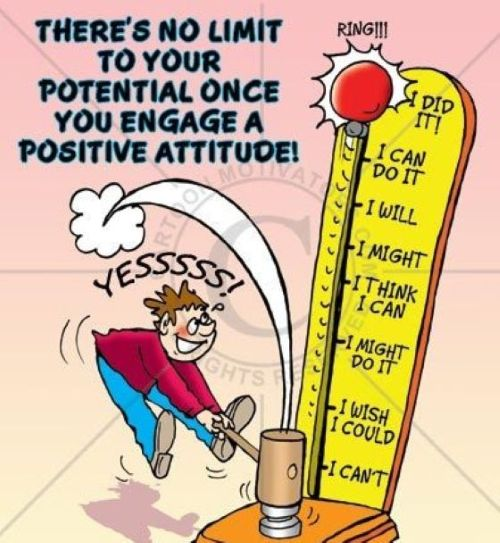

How to stay positive always ?

- Practice Gratitude Daily. Take time each day to reflect on what you're grateful for, even if it's something small.
- Focus on Solutions, Not Problems: When faced with challenges, focus on finding solutions rather than dwelling on the problem.
- Practice Mindfulness and Meditation:These practices help you stay grounded in the present moment, reducing stress and negative
thinking.
- Reframe Negative Thoughts: When negative thoughts arise, try to reframe them in a more positive light.
For example, instead of thinking, “This is too hard,” try thinking, “This is a challenge, but I can learn and grow from it.”
- Take Care of Your Body: Physical well-being is strongly connected to mental health. Exercise regularly, eat well, get enough sleep,
and stay hydrated. When your body feels good, it’s easier to maintain a positive mindset.
- Celebrate Small Wins: Don’t wait for big achievements to celebrate. Acknowledge and appreciate the small victories in your day-
to-day life.
- Visualize Your Success:Spend some time visualizing positive outcomes for your goals and aspirations.
- Laugh Often: Laughter is a natural mood booster. Watch a funny video, read jokes, or spend time with people who make you laugh.
- Help Others: Acts of kindness not only help others, but they also boost your own mood.
- Stay Organized and Manage Your Time: Keep a calendar or planner to stay on top of tasks, and break larger tasks
into smaller, manageable steps to avoid feeling overwhelmed.